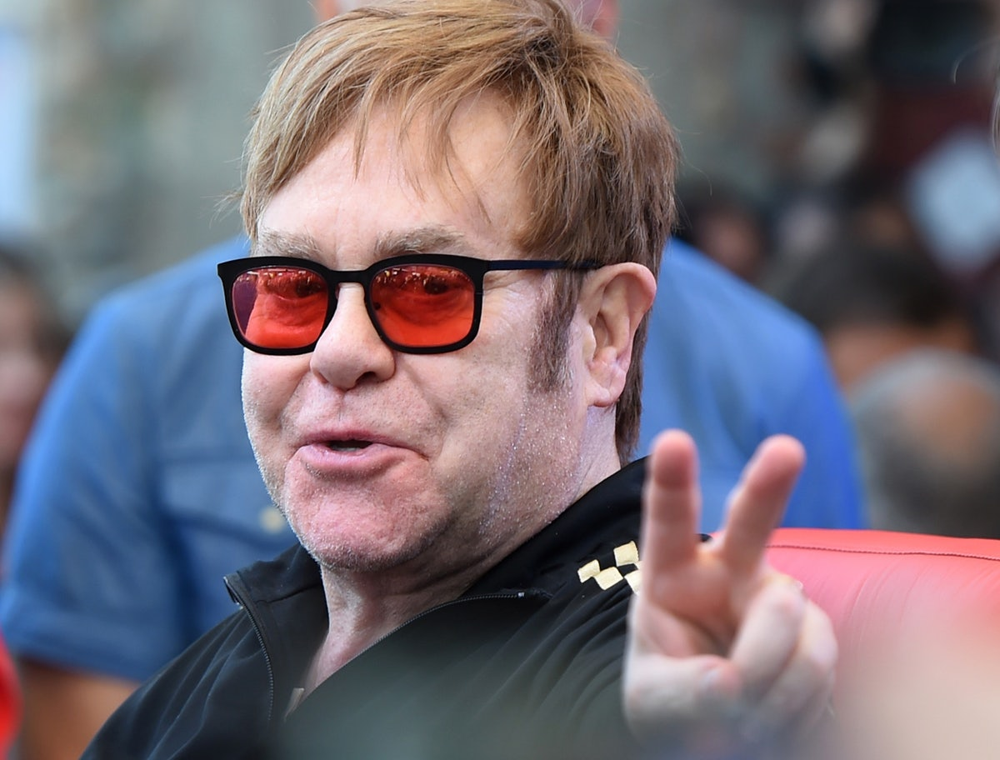

Introducing the inimitable, outrageous, larger-than-life king of the charts. Elton John has delivered everything we want from a rock star and more—wild rock anthems, searing ballads, undiluted exuberance, duck costumes—for almost fifty years. And he shows no sign of stopping.
Elton John is among the most successful musical artists of the modern era.
In terms of popularity, he ranks with Elvis Presley and the Beatles among rock and rollers. Moreover, his longevity as an active recording artist surpasses both of them. In 1992 he broke Presley’s old record for the most consecutive years of Top 40 hits on Billboard’s singles chart, having been a continual presence every year since “Your Song” debuted in December 1970. A multifaceted talent, John excels as both a ballad-oriented singer/songwriter and a flamboyant rock and roll star. He is also a first-rate musician who elevated the role of piano in a medium theretofore dominated by guitars.
John emerged from the obscurity of a British song publisher’s office in a meteoric rise to superstar status during the Seventies. Toting a wardrobe of outrageous costumes and glasses, he was the consummate live entertainer, providing a splashy, larger-than-life visual spectacle to complement his music. He helped usher rock into the arenas during the decade when that conquest became a sign of dominance. John and longtime lyricist and partner Bernie Taupin identified and shaped the mood of the Seventies from its inception. Given to roughly equal numbers of ballads and rockers, John’s output was as critical to this decade as the Beatles were to the Sixties and Presley to the Fifties. There was even a bit of overlap between the Beatles and Elton John, as John had the most successful Beatles cover ever with his 1974 version of “Lucy in the Sky with Diamonds”—which featured John Lennon as guest guitarist.
Reginald Kenneth Dwight was born on March 25, 1947 in Pinner, a suburb of London. He displayed early promise on the piano and was awarded a scholarship to the prestigious Royal Academy of Music, where he enrolled in a program for musically gifted children. Though tutored in the classics, his heart belonged to rock and roll, especially Ray Charles, Buddy Holly, Chuck Berry and Jerry Lee Lewis. Early on, he joined a band called Bluesology, a blue-eyed soul group whose members included singer Long John Baldry and sax player Elton Dean. (The combination of their first names provided Reg Dwight with the stage name “Elton John.") John met lyricist Bernie Taupin when both answered a June 1967 ad placed by Liberty Records in the British music paper New Musical Express. Thus began a prolific partnership that endures to this day.
If John’s earliest albums—Empty Sky (1969), Elton John (1970) and Tumbleweed Connection (1970)—established him as a solid arrival on the rock scene, his concert performances sent his career into orbit. The Elton John Band—the Seventies core of which included guitarist Davey Johnstone, bassist Dee Murray and drummer Nigel Olsson—was an onstage powerhouse. John’s flamboyant stage wardrobe included ostrich feathers, $5,000 spectacles that spelled his name in lights, a Statue of Liberty costume and more. He would take the stage attired as Donald Duck or Wolfgang Amadeus Mozart. In the game of sartorial one-upmanship during the over-the-top Seventies, Elton John was without peer.
All the while he steadily amassed a formidable catalog of recordings, their classic status being all the more amazing for the prolific pace at which he worked. During 1971 alone, four new Elton John albums made their appearance on Billboard’s album chart: the western-themed Tumbleweed Connection; the soundtrack to an obscure film, Friends (1971); the live album 11-17-70 (1971), recorded on that date at a New York radio station’s studio; and Madman Across the Water (1971), which contained the favorites “Tiny Dancer,” “Levon” and the brooding title track. Honky Chateau, which appeared in 1972, was top-heavy with classic tracks, including “Honky Cat” and “Rocket Man.” The latter was a profound match of words and music that used space travel as a metaphor for spiritual isolation.
In 1973 John launched his own custom label Rocket Records. That peak year saw the release of the poppy, hit-filled Don’t Shoot Me, I’m Only the Piano Player (“Crocodile Rock” and “Daniel,”) and the more thoughtful, album-oriented double-LP Goodbye Yellow Brick Road. John had already racked up five Top Forty hits prior to the release of Don’t Shoot Me, but the floodgates opened in the wake of the chart-topping success of that album’s “Crocodile Rock.” In the three-year period from 1973 to 1976, John amassed fifteen hit singles, including six that went to Number One (“Crocodile Rock,” “Bennie and the Jets,” “Lucy in the Sky With Diamonds,” “Philadelphia Freedom,” “Island Girl,” “Don’t Go Breaking My Heart”) and three that reached Number Two (“Daniel,” “Goodbye Yellow Brick Road,” “Don’t Let the Sun Go Down on Me”). Those fifteen singles logged a combined one hundred fifty-six weeks from 1973 to 1976, which is to say that, on average, an Elton John single could be found in the Top Forty every week for three years. In other words, Elton John completely dominated the rock world in the mid-Seventies.
Moreover, John wasn’t just a highly successful singles artist. From 1972 to 1975, he released seven consecutive albums that topped the charts: Honky Chateau (1972, Number One for five weeks), Don’t Shoot Me, I’m Only the Piano Player (1973, Number One for two weeks), Goodbye Yellow Brick Road (1973, Number One for eight weeks), Caribou (1974, Number One for four weeks), Elton John—Greatest Hits (1974, Number One for ten weeks), Captain Fantastic and the Brown Dirt Cowboy (1975, Number One for seven weeks) and Rock of the Westies (1975, Number One for three weeks). These seven albums topped the album chart for a combined total of thirty-nine weeks, which is to say an Elton John album was ensconced at Number One every fourth week or so during the mid-Seventies. Sales figures and chart statistics such as these place Elton John in a rarefied class with the likes of the Beatles, the Rolling Stones, Elvis Presley, Frank Sinatra, Garth Brooks and Bob Dylan.
In 1974 John became director of a professional soccer team, the Watford Football Club. On Thanksgiving Day of that year, he coaxed a reclusive John Lennon onstage for three songs during a Madison Square Garden concert that turned out to be Lennon’s final public performance. The charmed year of 1975 began with Elton John—Greatest Hits lodged at Number One. Later that year, two albums of new material—Captain Fantastic and the Brown Dirt Cowboy, a musical autobiography about Elton John and Bernie Taupin, his longtime lyricist, and the more straightforward, rock-oriented Rock of the Westies—entered the album chart at Number One, a previously unprecedented feat.
John’s exhausting pace tapered off as the Seventies wound down. John and Taupin took a two-year hiatus from each other, during which time they worked with other writers. They resumed their partnership by co-writing several songs on 21 at 33 (1980), and 1983’s Too Low for Zero was their first fully collaborative album of the Eighties. The rest of the decade found John working less furiously, though no less successfully, charting almost exactly as many Top 40 singles during that decade as he had in the previous one. Among them was “Sacrifice,” taken from 1990’s Sleeping With the Past, which reached Number One in his British homeland.
Elton John remained active and viable in the Nineties, adding a tireless devotion to AIDS-related issues to his resume. Among other things, he established the Elton John AIDS foundation to provide funds for services to people living with HIV/AIDS and for educational programs targeting AIDS prevention. Meanwhile, oblivious to trends or the passage of time, John continued his hit-making ways. He scored a Number One single in 1992 with a live remake of “Don’t Let the Sun Go Down on Me” (a duet with George Michael) and reached Number Four in 1994 with “Can You Feel the Love Tonight,” from the soundtrack to the Disney film The Lion King. Five songs from that animated feature were composed by John and lyricist Tim Rice.
The year 1997 was an eventful one for John, marked by both triumph and tragedy. He lost two close friends, Britain’s Princess Diana and Italian designer Gianni Versace, under tragic circumstances. On the other hand, his tribute single to Diana, “Candle in the Wind 1997”—which was produced in a day by George Martin—became a phenomenal success that helped the whole world in its grieving. It sold more than 33 million copies, becoming the biggest single in history, and raised over 20 million pounds (roughly 30 million U.S. dollars) for the Diana, Princess of Wales, Memorial Fund. In early 1998 Elton John was knighted in his British homeland. That same year, the Recording Industry Association of America announced that John was the second top-selling solo artist of all time (behind Garth Brooks), with a grand total of 60.6 million units sold.
John reprised his collaboration with lyricist Tim Rice for Disney’s Broadway musical Aida (based on Verdi’s opera), which opened in March 2000 and won four Tony Awards. As luck would have it, John co-wrote the music for the spring season’s two most popular Broadway musicals: The Lion King and Aida. He returned to the world of rock and roll in with a concert at New York’s Madison Square Garden that was released as Elton John—One Night Only (The Greatest Hits). In 2001, he released an album, Songs from the West Coast, that harked back in spirit and approach to earlier classics like Tumbleweed Connection.
Inductee: Elton John (piano, vocals; born March 25, 1947)